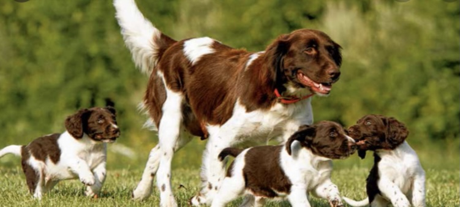

Hier gehts runter
Die Jagd

"Wie kommt man zur Jagd?"
Freunde von mir sind leidenschaftliche Jaeger und ihre Erzaehlungen haben mich schon immer fasziniert. Es hat nicht lange gedauert, bis sie mich das erste mal zum Ansitz mitgenommen haben. Ich durfte erleben, wie es ist sich leise auf einen Hochsitz zu schleichen und genau zu zuhoeren ob irgendwo in der Naehe ein Zweig knackt oder ein Blatt raschelt. Zum ersten Mal habe ich als Stadtkind Rehe und Wildschweine in Freiheit gesehen und durch ein Fernglas beobachten koennen. Zum ersten Mal war ich dabei, als ein Stueck erlegt und aufgebrochen wurde. Ich habe damals schon viel ueber Natur, Tiere und die Jagd gelernt - aber das ist es nicht, was meiner Meinung nach Jagd erleben ausmacht.
Richtig erfahren, was Jagd erleben bedeutet habe ich erst im vergangenen Dezember. Meine Freunde luden mich ein, als Treiber bei einer Drueckjagd dabei zu sein. Ich habe sofort begeistert zugestimmt, doch bereits morgens am Treffpunkt legte sich meine Euphorie wieder. Zwar wurde ich hoeflich allen vorgestellt, fuehlte mich jedoch als laestiges Anhaengsel und Aussenseiterin. Vieles von dem, was dort besprochen wurde unter den Jaegern verstand ich nicht und so war ich nur ein stiller Beobachter des Geschehens. Als wir in den Wald gingen war dieser ploetzlich groesser, dunkler und unuebersichtlicher, als ich dachte. Ein mulmiges Gefuehl machte sich in mir breit und ich kam mir doof dabei vor durch den Wald zu gehen und laut 'Hop Hop' zu rufen. Es war mir sogar ein wenig peinlich, schliesslich kannte ich viele der Leute in unserer Treiberwehr gar nicht. Und so blieb ich zunaechst in meiner Rolle als stiller Beobachter. Ich trottete vorsichtig hinter meinen Freunden her, wenn auch stets froh darueber dabei zu sein und fasziniert von der Natur. Im Laufe des Tages gab es immer wieder Situationen, die dafuer gesorgt haben, dass ich mich immer mehr als Teil der Gruppe fuehlte. Jedes mal, wenn ploetzlich ein Wildschwein davon rannte oder ein Reh aufgeschreckt davon sprang war es wie ein kleines Abenteuer fuer mich. Genauso jedes mal, wenn ein Schuh im Schlamm stecken blieb, jemand ueber eine Wurzel fiel oder sich ploetzlich in den Schlamm warf um einen Frischling abzufangen. Ich hatte das Gefuehl, dass es auch fuer die Anderen in meiner Gruppe so war, egal ob sie regelmaessig zur Jagd gingen oder nicht. Es waren Erlebnisse, die uns zusammen als Gruppe widerfahren sind und das hat uns ein wenig vertrauter miteinander gemacht.
Das Gefuehl des nicht dazugehoeren verschwand im Laufe des Tages immer mehr und ich begann mich als Teil der Gruppe zu fuehlen. Gerade zum Ende der Jagd wurde das Gefuehl verstaerkt. Wir gingen zum Streckenplatz und ich war ueberrascht, was sich dort tat. Es wurden Sitzbaenke aufgestellt, Feuer gemacht und fuer Verpflegung gesorgt. In kleinen Grueppchen sassen und standen Leute ums Feuer herum und berichteten vom heutigen Jagderlebnis. Mit einem Teller Suppe und einem Bier in der Hand setze ich mich zu einer Gruppe, die ich nicht kannte. Ich wurde direkt angesprochen und gefragt, ob wir viel gesehen haetten. Ich berichtete von verschiedenen Situationen des Tages und war ueberrascht, als die Jaeger neben mir Verbindungen zu ihren Erlebnissen zogen. Es wurde genau analysiert, bei wem das Wild, was ich gesehen hatte, noch vorbeilief und ob und von welchem Schuetzen es wohl erlegt wurde. Das war der Moment, in dem ich verstanden habe, was es wirklich heisst Jagd zu erleben. Es bedeutet mehr als nur als stiller Beobachter dabei zu sein - es bedeutet dazugehoeren.Mittlerweile traute ich mich auch, all die Fragen, die mir seit Stunden im Kopf herumschwirrten zu stellen und bekam begeistert umfassende Antworten aus allen Ecken der Gruppe. Denn neben dem Zusammenhalt heisst Jagd erleben auch lernen. Lernen, ueber Natur, Tiere und Jagd und lernen, wie es ist, wenn jemand sich fuer sein Hobby so sehr begeistert, dass es nahezu ansteckend ist. Denn das war es bei mir und deshalb werde ich im kommenden Oktober meinen Jagdschein machen. Lea Mareen Schieleit
"Man sagt der Jaeger sei ein Suender,weil selten er zur Kirche geht.Doch ein Blick in Himmel, ist oft besser als ein falsch gebet."
Seite2
Vorteile der Jagd
- viel in der Natur
- Entspannung
- Ruhe
- Bio Fleisch
- schuetzt Tiere u.Natur
- gleichgewicht Tier u.Natur
- viel beobachten
- Kranke Tiere erloesen
Nachteile der Jagd
- Menschen denken man erlegt aus Spass
- viele Feinde
- Wilderei
- vielen geht es ums Geld
- Trophaeenjagd
Link zu weiteren Pro und Contras
Jagdzeiten
| Reh | 1.05-31.01 |
|---|
| Schwarzwild | ganzjaehrig |
|---|
| Dachs | 1.08-31.12 |
|---|
| Fuchs | 1.08-15.02 |
|---|
Jagdhunde
- Kleiner Muensterlaender
- Beagle
- Kurzhaar
- Drahthaar
- Labrador
- Terrier
- Wachtel